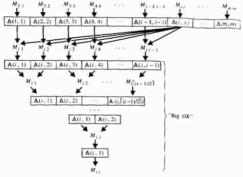

[next] [prev] [prev-tail] [tail] [up]
The study of sequential computations has been conducted through abstract models,
namely RAM's and Turing transducers. RAM's turned out to be useful for designing such
computations, and Turing transducers were helpful in analyzing them. Viewing parallel
computations as generalizations of sequential ones, calls for similar generalizations to the
associated models. A generalization along such lines to RAM's is introduced
below.
A parallel random access machine, or PRAM,  is a system <M, X, Y, A>, of
infinitely many RAM's M1, M2, ¼ , infinitely many input cells X(1), X(2), ¼ , infinitely many
output cells Y(1), Y(2), ¼ , and infinitely many shared memory cells A(1), A(2), ¼ Each Mi is
called a processor of . All the processors M1, M2, ¼ are assumed to be identical, except for
the ability of each Mi to recognize its own index i.
is a system <M, X, Y, A>, of
infinitely many RAM's M1, M2, ¼ , infinitely many input cells X(1), X(2), ¼ , infinitely many
output cells Y(1), Y(2), ¼ , and infinitely many shared memory cells A(1), A(2), ¼ Each Mi is
called a processor of . All the processors M1, M2, ¼ are assumed to be identical, except for
the ability of each Mi to recognize its own index i.
At the start of a computation,  is presented with some N input values that are
stored in X(1), ¼ , X(N), respectively. At the end of the computation the output
values are stored in Y(1), ¼ , Y(K), K ³ 0. During the computation
is presented with some N input values that are
stored in X(1), ¼ , X(N), respectively. At the end of the computation the output
values are stored in Y(1), ¼ , Y(K), K ³ 0. During the computation  uses m
processors M1, ¼ , Mm, where m depends only on the input. It is assumed that each of the
processors is aware of the number N of the given input values and of the number m of
processors.
uses m
processors M1, ¼ , Mm, where m depends only on the input. It is assumed that each of the
processors is aware of the number N of the given input values and of the number m of
processors.
Each step in a computation consists of the five following phases, carried in parallel by
all the processors.
- Each processor reads a value from one of the input cells X(1), ¼ , X(N).
- Each processor reads one of the shared memory cells A(1), A(2), ¼
- Each processor performs some internal computation.
- Each processor may write into one of the output cells Y(1), Y(2), ¼
- Each processor may write into one of the shared memory cells A(1), A(2), ¼
Two or more processors may read simultaneously from the same cell. However, a write
conflict occurs when two or more processors try to write simultaneously into the same cell.
Write conflicts are treated according to the variant of PRAM in use. The following are
three such possible variants.
- CREW (Concurrent Read -- Exclusive Write). In this variant no write
conflicts are allowed.
- COMMON. In this variant all the processors that simultaneously write to the
same memory cell must write the same value.
- PRIORITY. In this variant the write conflicts are resolved in favor of the
processor Mi that has the least index i among those processors involved in the
conflict.
The length n of an input (v1, ¼, vN ) of a PRAM  is assumed to equal the length of the
representation of the instance.
is assumed to equal the length of the
representation of the instance.
The depth of a computation of a PRAM, and its depth and size complexity are
defined with respect to the length n of the inputs in a similar way to that for
parallel programs. The time requirement of a computation of a PRAM and its time
complexity, under the uniform and logarithmic cost criteria, are defined in the obvious
way.
When no confusion arises, because of the obvious relationship between the
number N of values in the input and the length n of the input, N and n are used
interchangeably.
Example 7.2.1
COMMON and PRIORITY PRAM's,  = <M, X, Y, A> similar to the parallel
programs
= <M, X, Y, A> similar to the parallel
programs  i = <P, X, Y> of Example 7.1.1, can be used to solve the problem Q of
selecting the smallest element in a given set S of cardinality N. The communication
between the processors can be carried indirectly through the shared memory cells
A(1), A(2), ¼
i = <P, X, Y> of Example 7.1.1, can be used to solve the problem Q of
selecting the smallest element in a given set S of cardinality N. The communication
between the processors can be carried indirectly through the shared memory cells
A(1), A(2), ¼
Specifically, each message to Mi is stored in A(i). Where the PRAM's are similar to
1, no problem arises because all the messages are identical. Alternatively, where the
PRAM's are similar to  2 or
2 or  3, no problem arises because no write conflicts occur.
3, no problem arises because no write conflicts occur. 
By definition, each CREW PRAM is also a COMMON PRAM, and each COM-
MON PRAM is also a PRIORITY PRAM. The following result shows that each
PRIORITY PRAM can be simulated by a CREW PRAM.
Theorem 7.2.1
Each PRIORITY PRAM  of size complexity Z(n) and depth complexity D(n) has an
equivalent CREW PRAM
of size complexity Z(n) and depth complexity D(n) has an
equivalent CREW PRAM  ' of size complexity Z2(n) and depth complexity
D(n)log Z(n).
' of size complexity Z2(n) and depth complexity
D(n)log Z(n).
Proof
Consider any PRIORITY PRAM = <M, X, Y, A>.  ' = <M ', X, Y, A> can be a
CREW PRAM of the following form, whose processors are denoted M1 1, ¼ , M1 m,
M
2 1, ¼ , M2 m, ¼ , Mm 1, ¼ , Mm m.
' = <M ', X, Y, A> can be a
CREW PRAM of the following form, whose processors are denoted M1 1, ¼ , M1 m,
M
2 1, ¼ , M2 m, ¼ , Mm 1, ¼ , Mm m.
On a given input, ' simulates the computation of  .
.  ' uses the processors
M
1 1, M2 2, ¼ , Mm m for simulating the respective processors M1, M2, ¼ , Mm of
' uses the processors
M
1 1, M2 2, ¼ , Mm m for simulating the respective processors M1, M2, ¼ , Mm of  . Similarly,
. Similarly,  '
records in the shared memory cell A(m2 + i) the values that records in the
shared memory cell A(i), i ³ 1. The main difference arises when a write is to be
simulated.
'
records in the shared memory cell A(m2 + i) the values that records in the
shared memory cell A(i), i ³ 1. The main difference arises when a write is to be
simulated.
In such a case, each Mj j communicates to each Mi i the address of the cell where Mj
wants to write. Each Mi i then determines from those addresses, if it has the highest
priority of writing into its designated cell, and accordingly decides whether to
perform the write operation. Mi i employs the processors Mi 1, ¼ , Mi i-1 and the shared
memory cells A(i, 1), ¼ , A(i, i - 1) for such a purpose, where A(i1, i2) stands for
A((i1 - 1)m + i2).
To resolve the write conflicts each Mj j stores into A(j, j) the address where Mj wants
to write (see Figure 7.2.1).

| Figure 7.2.1 | Flow of information for determining the priority of Mi i in writing. |
|
Then Mi i determines in the following manner whether the shared memory cell A(i, i)
holds an address that differs from those stored in A(1, 1), ¼ , A(i - 1, i - 1).
Each processor Mir, 1 £ r < i, starts by reading the addresses stored in A(r, r) and in
A(i, i), and storing 1 in A(i, r) if and only if A(r, r) = A(i, i). Then the processors
Mi1, ¼ , Mié(i-1)/2ù are employed in parallel to determine in O(log i) steps whether the
value 1 appears in any of the shared memory cells A(i, 1), ¼ , A(i, i - 1). At each step the
number of "active" processors and the number of the active shared memory cells
is reduced by half. At any given step each of the active processors Mir stores
the value 1 in A(i, r) if and only if either A(i, 2r - 1) or A(i, 2r) holds that
value.
Mi i determines that A(i, i) holds an address that differs from those stored in
A(1, 1), ¼ , A(i - 1, i - 1) by determining that A(i, 1) holds a value that differs from 1. In
such a case, Mi i determines that Mi has the highest priority for writing in its designated
cell. Otherwise, Mi i determines that Mi does not have the highest priority.
[next] [prev] [prev-tail] [front] [up]